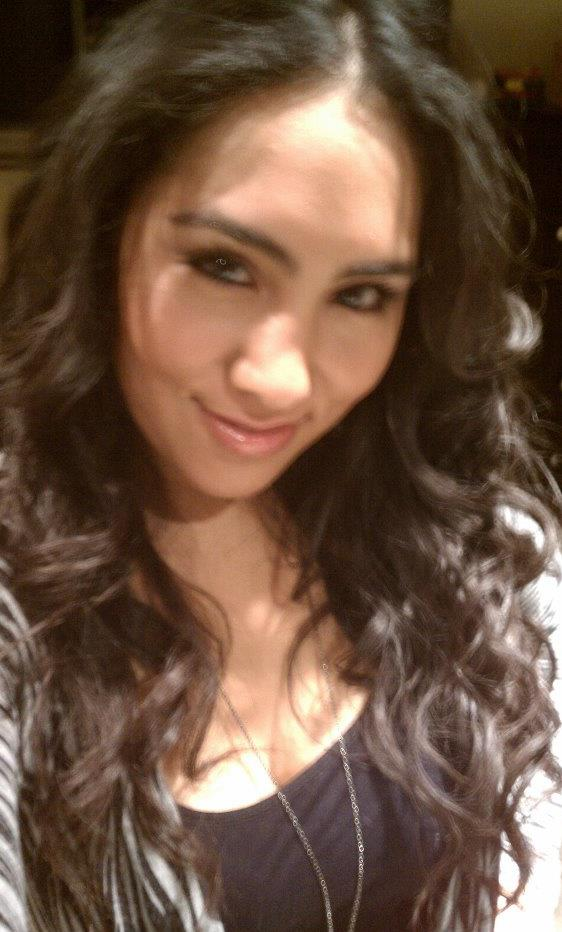
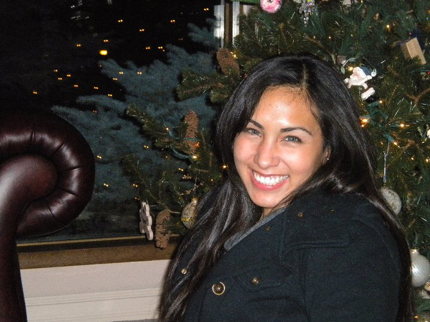

Amanda Apodaca
VCD Major
apodaca.amanda71@gmail.com


Websites I visit most often!!!
- http://pinterest.com/
- http://www.countryoutfitter.com/
- http://www.stumbleupon.com/
- http://www.pandora.com/
- http://www.youtube.com/
I am a senior this year, but still love learning about all the different aspects of graphic design. At times it can feel like a struggle, but I don't think I would want to be in a field that wasn't challenging. I am in love with arts and wish to extend my understanding even further beyond the paper and pencil. Web designing was what first sparked my interest in graphic design in the first place, back in high school, but many many things have changed with the web since then and can't wait to build successful websites.